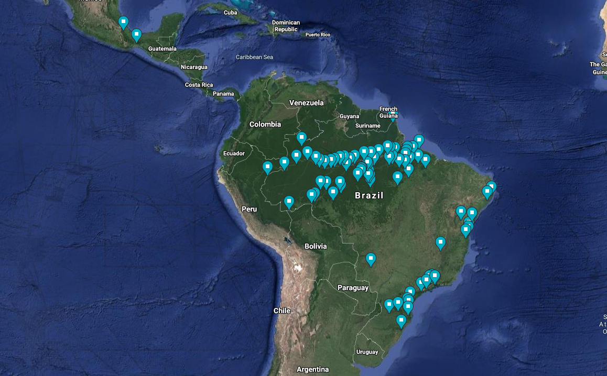

Most of my career has been associated with natural history museums, which provided me with extensive experience in managing, growing, and promoting the importance of these priceless repositories of biodiversity. Natural history museums are dynamic institutions, constantly growing, seeking new methods of obtaining and preserving specimens, and investing in modern facilities to leverage advanced techniques in data collection and analysis.
The recent genomic revolution has enabled the growing use of advanced DNA sequencing techniques and functional genomics experiments in natural systems that were until recently only applied to model organisms. For instance, we can now sequence whole-genomes of hundreds of individuals, build chromosome level reference genomes, assemble pangenomes, apply single-cell transcriptomics techniques (e.g., single nuclei RNAseq), and perform in-vitro experiments with non-model organisms. The fast development of these new technologies demand the constant collecting of high-quality and information-rich biological specimens in the field.
Throughout my career I have extensively sampled bird specimens in the Neotropical region, being directly involved in the collection of more than 5,000 bird specimens across the Amazon Basin, Atlantic Forest, and Mexico. For example, during my Ph.D. I organized and led an expedition covering the entire extension of the Amazon river in Brazil (over 3,000km) obtaining one of the best modern series of floodplain forest species. The voucher specimens were deposited in several scientific collections and natural history museums in Brazil and the United States.

Specimens from fieldwork are deposited at the following institutions:
Museu Paraense Emilio Goeldi
Instituto Nacional de Pesquisas da Amazonia
Colecao Biologica da Universidade Regional de Blumenau
Laboratorio de Genetica e Evolucao Molecular de Aves
American Museum of Natural History
The Academy of Natural Sciences of Drexel University
Museu Nacional do Rio de Janeiro
Museu de Zoologia da Universidade de São Paulo
Louisiana State University Museum of Natural Science